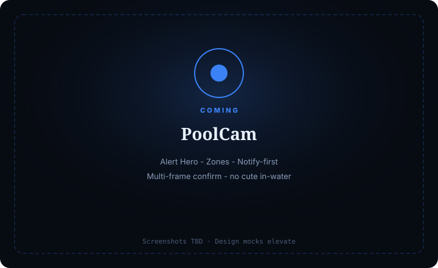

PoolCam
Life-safety pool console — unattended in-water awareness, notify-first, multi-frame confirm.
For pool owners/ops who need serious in-water alerts — never cute soft-pedal on a child in water.

What it does
PoolCam is a life-safety console: Live pool view, Alerts hero, Zones, and notify-first automations.
Highest seriousness in the Cam family. Multi-frame confirm before escalate. Pet triage never softens child seriousness.
Fun only on empties / first setup win — never on in-water alerts.
Capabilities
Day-one surface vs Advanced / gated — from Clarity GH Pages pack.
Day-one surface
Live
Day onePool feed + zone overlays
Alerts
Day oneIn-water / fail / cam hero stack
Zones
Day oneWater / deck / ignore
Automations
Day oneNotify only on Step E path
Advanced / gated
Escalate hardware
AdvancedBehind multi-frame + policy
Medical drowning diagnosis
OutForbidden; alert + notify only
How to use it
First-run (outline)
Add feed
Clear water view.
Draw water / deck zones
—
Proof path
Practice or controlled.
Step E
Notify me only (dry-run); multi-frame awareness.
Confirm seriousness
No jokes on in-water.
Daily loop (outline)
Live + Alerts hero
First.
Treat in-water
Highest priority.
Verify zones
After furniture/season changes.
Cooldowns / arming
Deliberate.
Badge
In-water / fail / cam — not sleeping.
Honesty / trust
Life-safety seriousness; multi-frame; no cute in-water.
- PoolCam seriousness — no drowning jokes; no cute soft-pedal on unattended child.
- Notify-first + multi-frame confirm before escalate.
- Pet triage never softens child alert weight.
- Hints/alerts ≠ medical diagnosis.
- Compliance: see pool safety/privacy pack.
Screenshots
Screenshots TBD from Design mocks — capture when Design elevates.
Capture when Design elevates
Life-safety seriousness; multi-frame; no cute in-water
Get started
Stub page — full elevate after Design screenshots. Honesty locks already live.